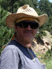
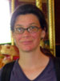
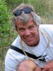
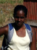
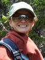
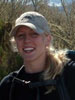
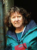

Project Team
Project Investigators

César Nufio, PhD
Postdoctoral fellow
By training, I am a behavioral ecologist. My previous research focused on understanding the reproductive decisions made by insects and their impacts on the reproductive success of females and their offspring. After receiving my PhD from the University of Arizona, Tucson, I coordinated graduate level field courses in Costa Rica for The Organization for Tropical Studies.
I am currently a professional research associate in the CU’s Department of Ecology and Evolutionary Biology, although I conduct most of my research and work closely with the Entomology Section of the CU Museum. I am currently working with Deane Bowers and Rob Guralnick on several projects that utilize collections data to understand how environmental changes can effect the biology, distributions and phenology of different insect groups.
Now that the Gordon Alexander Orthoptera Collection has been curated, georeferenced and databased, my research has focused on resurveying Alexander’s main collecting sites to understand the effects of regional climate change on grasshopper phenology, distribution, and life history traits.
M. Deane Bowers, PhD
Curator of Entomology
My research concentrates on the interactions between plants, herbivores and natural enemies. I combine field, greenhouse and laboratory work to investigate the dynamics of these interactions from many perspectives, including behavior, evolution, ecology, physiology and plant and insect chemistry. This research has its roots and context in attempts to understand how plant-insect-natural enemy relationships evolve and are maintained.
A major part of my program focuses on plant defensive chemistry and its importance for herbivores and the natural enemies of these herbivores. I am especially interested in how variation in plant compounds is important for insects that sequester these compounds and how this plant variation and its consequences for herbivores affect interactions with natural enemies, both predators and parasitoids. My research has both ecological and evolutionary components: how do the dynamics of these interactions affect ecological relationships among the participants, and how do these interactions evolve?
I am also interested in how human-induced changes in the environment can affect insect communities and insect-plant-natural enemy interactions. One example of this is the grasshopper research described elsewhere on this page. Another example is research investigating factors affecting the success of invasive plants and efforts at using biological control to reduce the impact of these plants. A third is studies to document changes in butterfly community diversity in native, disturbed, and restored habitats.
Robert Guralnick, PhD
Curator of Zoology
My broad research interest is how animal species respond to past and present environmental changes. The approaches I use to study these questions are varied, and include direct inference through examination of fossil and modern species, as well as indirect inference using molecular phylogenetic, ecological niche modeling, and morphometrics approaches. I examine multiple aspects of response —including distributional, molecular, morphological and functional. I also address response over multiple time-scales, from current changes due to climate and landscape change, to changes over thousands and in some cases millions of years. Because so much of the work I do uses primary species and population occurrence data (when and where species and populations occur) available from natural history collections, I am very involved in ecological and biodiversity informatics initiatives to increase the quality, availability and utility of such datasets at the global scale.
My particular informatics interest is building online Geographic Information Systems so that anyone may access, visualize and analyze legacy and current biodiversity and environmental data. I primarily work on gastropod and bivalve molluscs but my students work on a variety of very diverse organisms including mammals, viruses and ferns. The addition of grasshoppers to the list is a welcome one.
Collections and Technology Support

Philip Goldstein
Informatics Manager
I have experience with corporate information systems, both large and small, and have an academic background in biology and earth sciences. In recent years I have devoted my attention to scientific and geographic systems, especially in the area of biodiversity studies. In addition to aiding with data capture, exchange and analysis, as well as with curatorial activities, my systems solutions strive to integrate and enhance work conducted by different members of the scientific community with technology based solutions. I have worked on projects with both the University of Colorado at Boulder and the University of California at Berkeley, and through collaborations I have worked on-site with a half-dozen more institutions throughout the country. I have also contributed to the establishment of international data standards as a participant in the Genomic Standards Consortium.

Leigh Anne McConnaughey
I work in web design, illustration and animation. I have an art background with interests in scientific illustration and children's illustration. I studied visual art and art history at University of California San Diego, and studied illustration at the Academy of Art College in San Francisco. I have worked as a lead artist for an educational media organization creating web sites and CD ROMs, and I am currently working on several consulting projects involving both scientific illustration and web site design and construction.
Virginia Scott
Collections Manager, MS
I supervise the curation and databasing of all specimens in the Entomology Collection. After receiving my Master's degree in Entomology from Michigan State University, I came to the University of Colorado. My major research and collecting focus is on bees, especially Colletidae and Megachilidae. My role in the grasshopper project is centered on collections and data management issues. I train students in general collecting and curatorial techniques, and on how to input collections data into the specimen database. I maintain the museum's collection database and help with the export of data.
Graduate Students

Jeff McClenahan, MS Student, Museum and Field Studies
I received my BA in biology from the University of Colorado at Boulder in 2006. I became involved in the Alexander Project during the summer of 2006 as an REU student. From this experience, I became interested in museum studies, land use issues and the effects of climate change on a variety of organisms. The focus of my Master's thesis is to understand how regional climate change may have affected the distribution of grasshopper species along the Colorado Front Range. I plan to also use niche modeling to predict how grasshopper species distributions may change as the local climate continues to warm.
I recently completed a video interview of Dr. John Hilliard, who was one of Dr. Gordon Alexander’s assistants and an important contributor in the original 1958-1960 surveys. In the future I plan to continue to integrate museum entomology collections and biodiversity informatics, and to conduct research on community ecology in other parts of the world.
Chris McGuire, MS Student, Department of Environmental Studies
I received my bachelor’s degree in molecular biology from the University of Washington in Seattle in 2002. Currently, I am a master’s candidate in the Department of Environmental Studies here at CU. My thesis research focuses on grasshopper phenology and the relationship between measured elevation-dependent warming and the timing of grasshopper emergence. Much of this research involves compiling local climate data and conducting field collections at a number of sites in the Front Range measuring current climate and timing of biological phenomena against those of the past. Access to the Gordon Alexander collection is instrumental in this research; without it we would have no benchmark for interpreting the results of studies of this nature.
Undergraduates

Maria-Elena Cruz-Lopez, SMART Student
I worked on the grasshopper resurvey project as an intern in the 2007 Summer Multicultural Access to Research Training (SMART) program. My research focused on collecting grasshoppers at several of the sites and comparing their current time to reach adulthood to when they did 50 years ago. I am very interested in pursuing a degree in veterinary sciences.
Thomas Gabel, BS Student, Ecology and Evolutionary Biology
I am currently a senior in the EBIO department. I have been a participant in the Gordon Alexander Resurvey Project since the Spring of 2007 and my focus is on investigating the effect of climate change on the size and fluctuating asymmetry of two local grasshopper species (Melanoplus dodgei and Aeropedellus clavatus). In the future, I would like to continue research in entomology or marine invertebrates and to pursue a career as a biology teacher/professor.

Alizabeth Moore, BS Student, Ecology and Evolutionary Biology
I am interested in ecology and issues of climate change. Last summer (2007) I helped resurvey grasshoppers along Gordon Alexander’s previous elevational gradient and at the time I reared many juvenile grasshoppers in order to determine what species they would become as adults. Currently, I am working to produce a key that will allow juvenile Melanoplus grasshoppers of the area to be more easily identified. This key will be available to the public via the Alexander project web site.

Elizabeth Thurston, BA Student, Univ. of Colorado.
I am finishing up my first year at the University of Colorado and my major is still undecided. My interests are varied, but I have a special love for the sciences and especially biology. I recently received a Bioscience Undergraduate Research Skills and Training (BURST) award from the Biological Science Initiative. During the summer of 2008, my research will focus on examining the effects of urban fragmentation on butterfly and grasshopper species richness and diversity. I will also explore help with a long term survey to understand the effects of climate change on grasshoppers.
Sara Seider, BS Student, Molecular, Cellular, and Developmental Biology (MCDB)
Working in the Entomology Section of the Museum has allowed me to apply my knowledge of MCDB towards its role in larger organisms. I am currently involved in a project using the Gordon Alexander Orthoptera Collection to study morphological change in the species Aeropedellus clavatus along an altitudinal gradient. More specifically, I will be working to understand why populations of this species found above tree-line have dramatically enlarged antennal clubs and front tibia. I’ll be testing multiple hypotheses that attempt to explain the function these enlarged structures and conducting rearing experiments to determine whether the development of the structures is environmentally induced.
Volunteers
Robert Harris, Esq., JD
I am a new attorney and my studies focused on environmental law while I was in law school. I volunteered to help with field work and grasshopper pinning, in 2007, after taking the Colorado bar exam. While my career forced me to end my volunteer position with the Entomology section, I hope to pursue my interest in biology in both my professional and personal life.

Johanna Zeh, BA, Univ. of Colorado, 1972; CBF, Natl. Institute of Credit Mgmt, 1991
I’m a former IRS tax collector, credit manager, and most recently the A/P and payroll accountant at the Native American Rights Fund. In the fall of 2007, I joined the Alexander Grasshopper Project as a volunteer. I’ve had a long-time interest in scientific methodology, in physics and the earth sciences. My current goal is to learn something new by working around practicing scientists! I’m presently learning about biology, climate change, entomology and how natural history museums work.
Working in the Museum, I’ve been able to apply some of my previous career skills, from helping to organize and file Alexander-related documents, to trying to insure consistent accuracy and efficiency in processing and recording research data, to aiming at accuracy in processing, pinning, labelling, and curating new specimens. In return, the Alexander Project researchers, museum staff and all of the students have been kind enough to educate me, every day, with information about their specialties and interests. I look forward to collecting and working in the field during the upcoming field season.

 For general questions or comments, please email cumuseum@colorado.edu.
For general questions or comments, please email cumuseum@colorado.edu.
©2008 CU Museum, UCB 218, University of Colorado, Boulder, Colorado 80309 tel: (303)492-6892